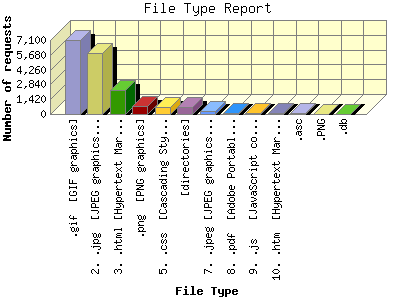

Report generated by Analog 5.91beta1 and Report Magic 2.21
|
Web Server Statistics for "Harish Narayanan (hnarayan) - October 2003" Report generated by Analog 5.91beta1 and Report Magic 2.21 |
The File Type Report identifies the type of information that is requested from the web site. GIF and JPG are the two types of graphic (image) files that are most commonly supported by web browsers. HTML (sometimes abbreviated HTM), ASP, and [directories] all represent actual pages. The number of image requests will almost always outnumber page requests as one page may contain several images.
This report shows all results. This report is sorted by number of requests.

| File Type | Number of requests | Number of bytes transferred | Percentage of the bytes | Percentage of the requests | |
|---|---|---|---|---|---|
| 1. | .gif [GIF graphics] | 7,087 | 5.454 MB | 2.04% | 39.38% |
| 2. | .jpg [JPEG graphics] | 5,860 | 74.226 MB | 27.70% | 32.56% |
| 3. | .html [Hypertext Markup Language] | 2,327 | 59.505 MB | 22.21% | 12.93% |
| 4. | .png [PNG graphics] | 765 | 102.141 MB | 38.12% | 4.25% |
| 5. | .css [Cascading Style Sheets] | 659 | 976.072 KB | 0.36% | 3.66% |
| 6. | [directories] | 638 | 10.691 MB | 3.99% | 3.54% |
| 7. | .jpeg [JPEG graphics] | 285 | 4.195 MB | 1.56% | 1.58% |
| 8. | .pdf [Adobe Portable Document Format] | 127 | 2.173 MB | 0.81% | 0.71% |
| 9. | .js [JavaScript code] | 93 | 81.211 KB | 0.03% | 0.52% |
| 10. | .htm [Hypertext Markup Language] | 83 | 7.848 MB | 2.93% | 0.46% |
| 11. | .asc | 56 | 129.390 KB | 0.05% | 0.31% |
| 12. | .PNG | 14 | 147.737 KB | 0.05% | 0.08% |
| 13. | .db | 3 | 416.000 KB | 0.15% | 0.02% |
This report was generated on January 18, 2004 18:27.
Report time frame October 1, 2003 00:41 to October 31, 2003 23:51.
| Web statistics report produced by: | |
 Analog 5.91beta1 Analog 5.91beta1 |  Report Magic 2.21 Report Magic 2.21 |